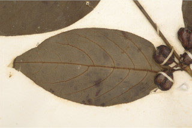
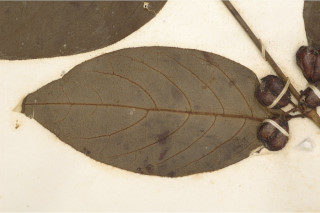

Small trees up to 7 m tall.
7 ಮೀ. ಎತ್ತರದವರೆಗಿನ ಸಣ್ಣ ಗಾತ್ರದ ಮರಗಳು.
Small trees up to 7 m tall.
சிறிய மரம் 7 மீ. உயரம் வரை வளரக்கூடியது.
Young branchlets slender, terete, glabrous
ಎಳೆಯ ಕಿರುಕೊಂಬೆಗಳು ತೆಳುವಾಗಿದ್ದು ದುಂಡಾಗಿರುತ್ತವೆ, ರೋಮರಹಿತವಾಗಿರುತ್ತವೆ.
Young branchlets slender, terete, glabrous
சிறியநுனிக்கிளைகள் மெல்லியவை, குறுக்குவெட்டுத் தோற்றத்தில் வளையமானது, உரோமங்களற்றது
Leaves simple, opposite, decussate; stipules interpetiolar, caducous and leaving scar; petiole 0.5 cm long, planoconvex in cross section, glabrous; lamina 10 x 4.5 cm, elliptic, elliptic-oblong, apex acute to shortly acuminate with blunt tip, base attenuate, margin entire, chartaceous, hirsute on both sides when young and only beneath when mature; midrib slightly raised above; secondary_nerves 6 pairs, slender; tertiary_nerves reticulate, sometimes obscure.
ಎಲೆಗಳು ಸರಳವಾಗಿದ್ದು ಕತ್ತರಿಯಾಕಾರದ ಅಭಿಮುಖ ಜೋಡನಾ ವ್ಯವಸ್ಥೆಯಲ್ಲಿರುತ್ತವೆ; ಕಾವಿನೆಲೆಗಳು ತೊಟ್ಟುಗಳ ನಡುವೆ ಇದ್ದು ಉದುರಿ ಹೋದ ನಂತರ ಗುರುತುನ್ನು ಉಳಿಸುತ್ತವೆ; ತೊಟ್ಟು 0.5 ಸೆಂ.ಮೀ.ವರೆಗಿನ ಉದ್ದವಿದ್ದು,ಅಡ್ಡ ಸೀಳಿದಾಗ ಸಪಾಟ ಪೀನ ಮಧ್ಯದ ಆಕಾರ ಹೊಂದಿರುತ್ತದೆ, ರೋಮರಹಿತವಾಗಿರುತ್ತದೆ; ಪತ್ರಗಳು 10 X 4.5 ಸೆಂ.ಮೀ. ಗಾತ್ರ, ಅಂಡವೃತ್ತ, ಅಂಡವೃತ್ತ-ಚತುರಸ್ರದ ಆಕಾರ ಹೊಂದಿದ್ದು,ಚೂಪಾದುದರಿಂದ ಹಿಡಿದು ಮೊಂಡಾಗ್ರವುಳ್ಳ ಚಿಕ್ಕದಾಗಿ ಕ್ರಮೇಣ ಚೂಪಾಗುವ ತುದಿ, ಒಳಬಾಗಿದ ಬುಡ, ನಯವಾದ ಅಂಚು,ಕಾಗದವನ್ನೋಲುವ ಮೇಲ್ಮೈ ಹೊಂದಿರುತ್ತವೆ,ಎಳೆಯದಾಗಿದ್ದಾಗ ಪತ್ರದ ಎರಡೂ ಬದಿಯಲ್ಲಿ ಒರಟುರೋಮಗಳಿದ್ದು ಬಲಿತಾಗ ತಳಭಾಗದಲ್ಲಿ ಮಾತ್ರ ಒರಟು ರೋಮಗಳಿರುತ್ತವೆ ; ಮಧ್ಯನಾಳ ಪತ್ರದ ಮೇಲ್ಭಾಗದಲ್ಲಿಕೊಂಚ ಮಟ್ಟಿಗೆ ಉಬ್ಬಿರುತ್ತದೆ;ಎರಡನೇ ದರ್ಜೆಯ ನಾಳಗಳು ಅಂದಾಜು 6 ಜೋಡಿಗಳಿದ್ದು ತೆಳುವಾಗಿರುತ್ತವೆ; ಮೂರನೇ ದರ್ಜೆಯ ನಾಳಗಳು ಜಾಲಬಂಧ ನಾಳ ವಿನ್ಯಾಸದಲ್ಲಿದ್ದು ಅಸ್ಪಷ್ಟವಾಗಿರುತ್ತವೆ..
Leaves simple, opposite, decussate; stipules interpetiolar, caducous and leaving scar; petiole 0.5 cm long, planoconvex in cross section, glabrous; lamina 10 x 4.5 cm, elliptic, elliptic-oblong, apex acute to shortly acuminate with blunt tip, base attenuate, margin entire, chartaceous, hirsute on both sides when young and only beneath when mature; midrib slightly raised above; secondary_nerves 6 pairs, slender; tertiary_nerves reticulate, sometimes obscure.
இலைகள் தனித்தவை, எதிரடுக்கமானவை, குறுக்குமறுக்கானவை; இலையடிச்செதில் இருஇலைக்காம்பிற்கு நடுவே (இண்டர்பீட்டியோலார்) உடையது, எளிதில் உதிரக்கூடியது மற்றும் தழும்புகளை ஏற்படுத்துகின்றன; இலைக்காம்பு 0.5 செ.மீ. நீளமானது, குறுக்குவெட்டுத் தோற்றத்தில் பிளேனோகான்வக்ஸ், உரோமங்களற்றது; இலை அலகு 10 X 4.5 செ.மீ., நீள்வட்ட வடிவானது, நீள்வட்டம்-நீள்சதுர வடிவானது, அலகின் நுனி கூரியது முதல் சிறிது அதிக்கூரியதுடன் அதன் முனை மழுங்கியது, அலகின் தளம் அட்டனுவேட், அலகின் விளிம்பு முழுமையானது, சார்ட்டோசியஸ், இளம்பருவத்தில் அலகின் மேற்பரப்பு மற்றும் கீழ்பரப்பு உரோமங்களுடையது, பிறகு அலகின் கீழ்பரப்பு மட்டுமே உரோமங்களுடையது; மையநரம்பு மேற்புறத்தில் அலகின் பரப்பைவிட சிறிது உயர்ந்து இருக்கும்; இரண்டாம் நிலை நரம்புகள் 6 ஜோடிகள், மெல்லியவை; மூன்றாம் நிலை நரம்புகள் வலைப்பின்னல் போன்றவை, சிலசமயங்களில் கண்களுக்கு புலப்படாது.
Inflorescence axillary umbels; flowers white; pedicels 0.4 cm.
ಪುಷ್ಪಮಂಜರಿಗಳು ಅಕ್ಷಾಕಂಕುಳಿನಲ್ಲಿರುವ ಪೀಠಛತ್ರ ಮಾದರಿಯವು;ಹೂಗಳು ಬಿಳಿ ಬಣ್ಣದವು;ತೊಟ್ಟು 0.4 ಸೆಂ.ಮೀ. ಉದ್ದವಿರುತ್ತದೆ.
Inflorescence axillary umbels; flowers white; pedicels 0.4 cm.
மஞ்சரி இலைக்கோணங்களில் காணப்படுபவை அம்பல் வகை மஞ்சரி; மலர்கள் வெள்ளை நிறமானது; மலர்க்காம்பு 0.4 செ.மீ.
Drupe, obovate to obcordate, ca. 1.3 cm long; seeds 2.
ಡ್ರೂಪ್ಗಳು ಬುಗುರಿಯಿಂದ ತಲೆಕೆಳಗಾದ ಹೃದಯದವರೆಗಿನ ಆಕಾರ ಹೊಂದಿದ್ದು ಅಂದಾಜು 1.3 ಸೆಂ.ಮೀ. ಉದ್ದವಿರುತ್ತವೆ;ಬೀಜಗಳ ಸಂಖ್ಯೆ 2.
Drupe, obovate to obcordate, ca. 1.3 cm long; seeds 2.
உள்ளோட்டுத்தசைகனி (ட்ரூப்), தலைகீழ் முட்டை வடிவானது முதல் தலைகீழ் இதய வடிவானது, 1.3 செ.மீ. நீளமானது; விதைகள் 2.


 
